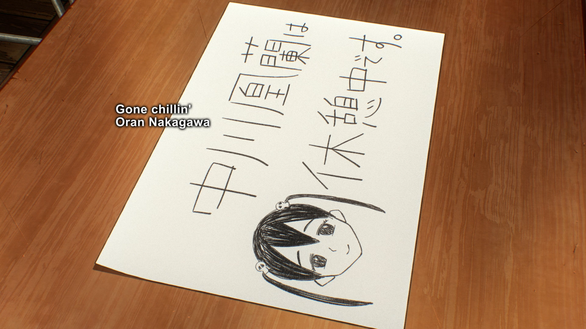
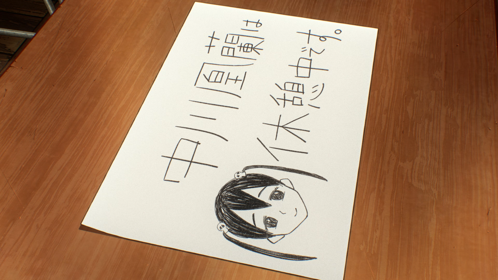
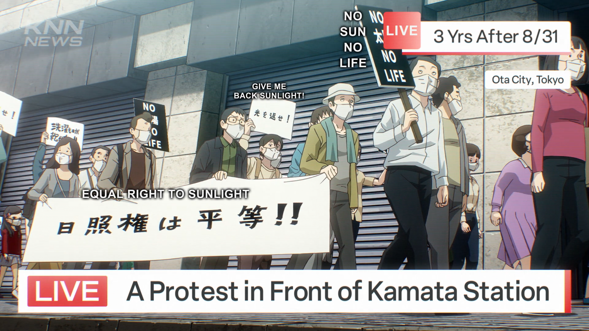
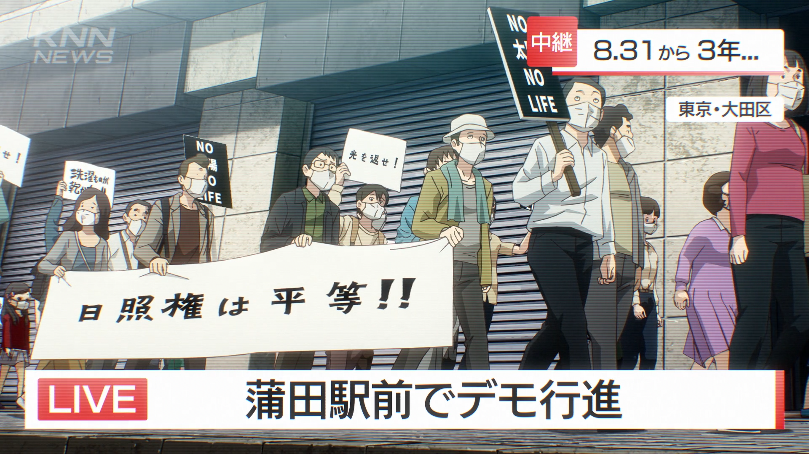
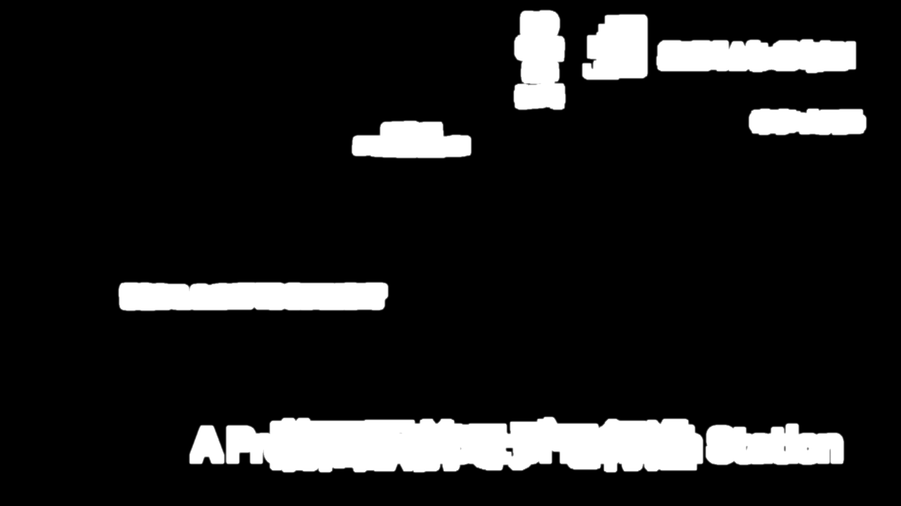
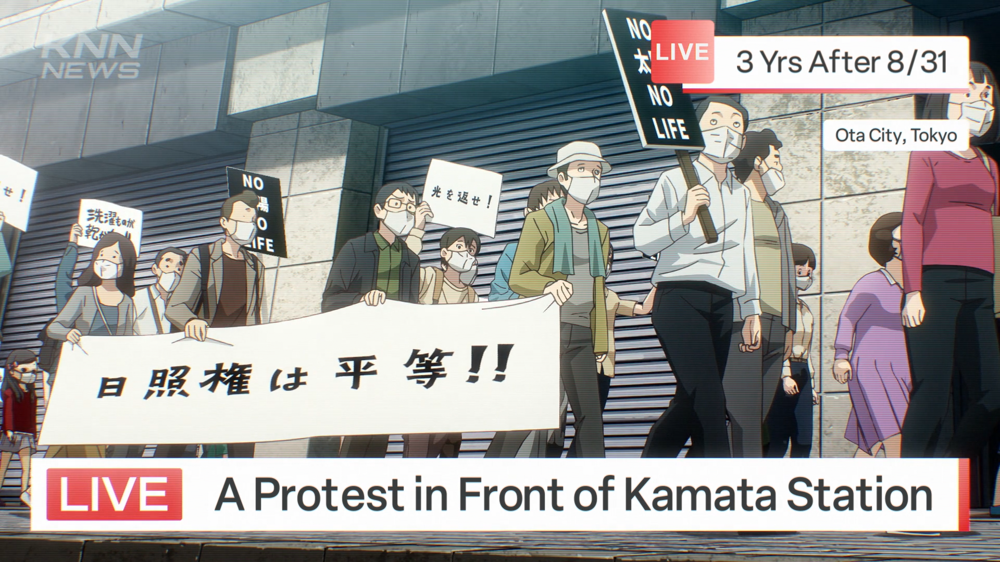
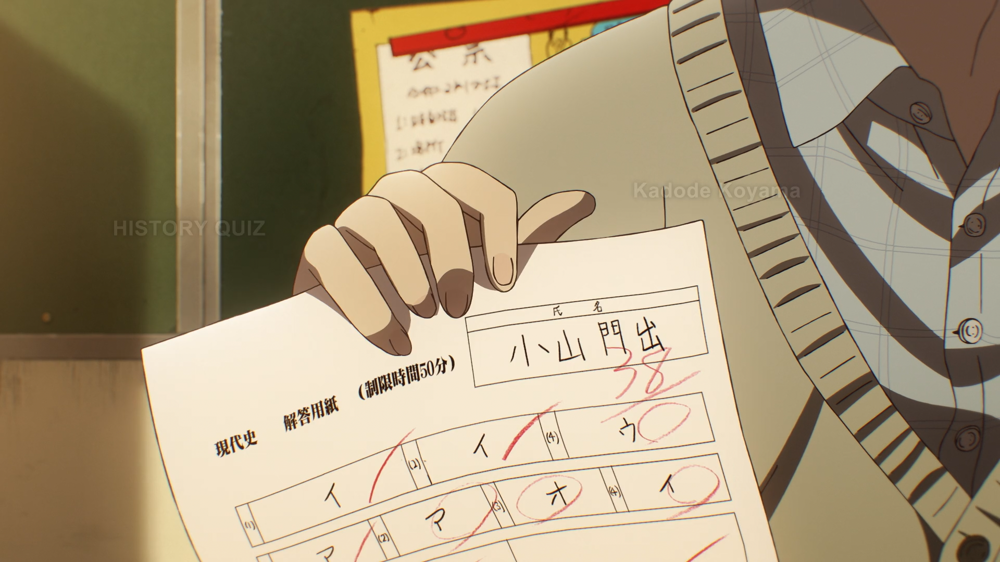
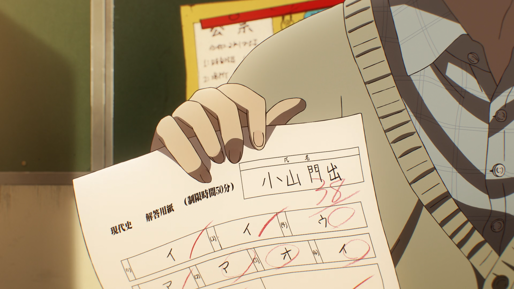

Dehardsubbing
Hardsubs are subtitles that are a part of the video, i.e. they are "burned-in." This is in contrast to softsubs which are kept separate from the video and thus can be toggled or edited without requiring a new encode.
This page will go over how to dehardsub (remove hardsubs) from a video.
Prerequisite
Dehardsubbing requires a secondary video source that is not hardsubbed in order to fill in the details that the hardsubs of the primary video source replaced. The secondary source is called the "reference" or "ref" clip in the vs-masktools APIs that will be shown here.
DEAD DEAD DEMONS DEDEDEDE DESTRUCTION (2024) will be used as a contemporary example of this. The WEB release of this movie/ONA has two video sources: the CR Japanese stream with no (English) hardsubs, and the CR English stream with hardsubs.
Getting Started
Here is an example of a hardsub that one might want to dehardsub, because it doesn't look particularly good and a typesetter could redo it via softsubs:


Since a video without hardsubs (the reference clip here) is available, one solution is to simply replace this hardsubbed scene with its counterpart:
This will replace frames 1138 through 1221 (inclusive) of the hardsubbed clip
hardsub with the reference clip ref. This is a fine solution if both sources
are of equal quality and nothing of value is being lost by throwing away this
whole range of frames from hardsub.
But let's say that hardsub is a better video source than ref, or that these
sources are being Lehmer-merged, or that for any other reason it is undesirable
to replace whole frames like this if it can be avoided. A better solution then
would be to replace only the hardsubbed region of the scene. This can be
accomplished with classes like HardsubSign:
This will find the differences between the hardsub and ref clips, for the
same frame range as before, and apply a mask that replaces just the hardsubbed
region of hardsub with the respective region from ref.
Bounding
This next example demonstrates two kinds of hardsubs: the good and the bad.
Here, the news broadcast's overlay is actually good (for an English release, at
least) and leaving it hardsubbed would save a typesetter some time. However,
this scene also has the bad Arial signs that could be redone better in softsubs
if they're important. If one tries to use HardsubSign like before on this, it
will mask everything.



Since the bad hardsubs are all contained to a single region for the whole scene,
the mask can be bounded by a BoundingBox. Think of this as masking the mask.
The bound is drawn from coordinate (0, 0) (the top-left corner) to a size of 1230x880, which is enough to cover only the Arial signs.

Fades
Hardsubs that fade in or out may require special handling to account for when
the hardsub is at its peak transparency. Lowering the threshold parameter thr
of HardsubSign may help but this can also begin to catch differences in noise
between the clips. This example will use HardsubSignFades, a specialized
version of HardsubSign, on the first frame of a fade-in since that is the most
difficult part of the sequence to mask.


Notice how just with default parameters, HardsubSignFades is able to catch
more of the hardsubs than plain HardsubSign can. This snippet also
demonstrates how it is not necessary to use the apply_dehardsub() function;
instead one can call get_mask() to get the dehardsub mask for any further
processing before applying it themselves. Don't forget to replace_ranges()
just the hardsubbed range(s) afterwards, since that was previously being handled
by apply_dehardsub().
Combining
When there are multiple hardsubs across the whole clip, there are a few convenient ways of applying all the masks without needing to duplicate the above snippets for each hardsub.
The first method is to take advantage of the ranges parameter, so long as all
of the respective hardsubs can be handled in the same way.
The remaining two methods are more flexible in that they allow for combining
different types of HardsubSign. In this example there are regular hardsubs and
fading hardsubs:
From here, one can either use get_all_sign_masks() to get a composite mask
containing everything:
Or sequentially apply each mask with bounded_dehardsub():